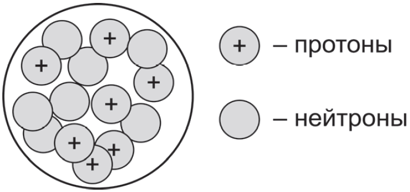

[ ПОДГОТОВКА К ОГЭ ПО ХИМИИ ]
Выберите два утверждения, в которых говорится об азоте как о простом веществе.
На рисунке изображена модель строения ядра атома некоторого химического элемента. Запишите в поля номер периода (X) и величину заряда ядра (Y).

Расположите химические элементы: 1) Фосфор, 2) Кремний, 3) Алюминий в порядке увеличения восстановительных свойств образуемых ими простых веществ. Запишите последовательность цифр в ячейку.
Установите соответствие между формулой вещества и степенью окисления хлора в данном веществе. Введите по одной цифре в ячейки таблицы под соответствующими буквами.
Из предложенного перечня выберите два вещества с ионной связью. Запишите в поле ответа номера выбранных веществ без пробелов и запятых.
Какие два утверждения верны для характеристики как алюминия, так и кремния? Выберите два подходящих варианта.
Из предложенного перечня веществ выберите соль и амфотерный оксид. Запишите в поля сначала номер соли, затем номер амфотерного оксида.
Какие два из перечисленных веществ вступают в реакцию с серой? Выберите два подходящих варианта.
Установите соответствие между реагирующими веществами и возможными продуктами их взаимодействия. Введите цифры в ячейки бланка под буквами.
Установите соответствие между веществом и реагентами, с каждым из которых оно может вступать в реакцию. Введите по одной цифре в ячейки таблицы под буквами.
Из предложенного перечня выберите две пары веществ, между которыми протекает реакция обмена.
Установите соответствие между реагирующими веществами и признаком протекающей между ними реакции. Введите цифры в ячейки бланка под буквами.
Укажите, какие ионы и в каком количестве образуются в растворе при полной диссоциации 1 моль хлорида железа(III). Выберите два верных варианта.
Выберите два исходных вещества, взаимодействию которых соответствует сокращённое ионное уравнение реакции: H+ + OH- = H2O
Установите соответствие между схемой процесса, происходящего в окислительно-восстановительной реакции, и названием этого процесса. Введите цифры под буквами.
Из перечисленных суждений о правилах работы с веществами в лаборатории и быту выберите верное(-ые) суждение(-я).
Установите соответствие между двумя веществами, взятыми в виде водных растворов, и реактивом, с помощью которого можно различить эти вещества. Введите цифры под буквами.
Вычислите массовую долю (в процентах) магния в гидрофосфате магния (MgHPO4). Запишите число с точностью до целых.
Вычислите массу гидрофосфате магния (в миллиграммах), который должна содержать одна таблетка витаминно-минерального комплекса, если рекомендован прием двух таких таблеток в сутки (норма магния — 300 мг в сутки). Запишите число с точностью до целых.
Ваша итоговая оценка по шкале ОГЭ:
Данные отправлены профессору на сервер Google Forms по защищенному протоколу.